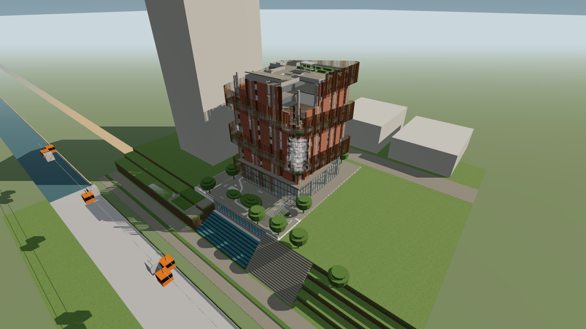
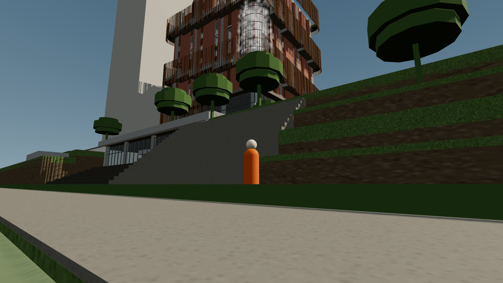
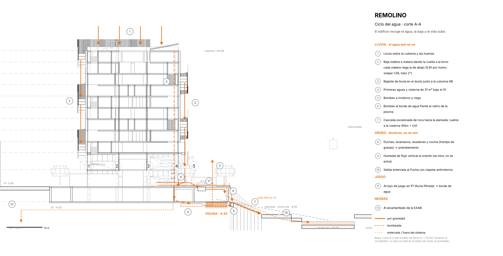
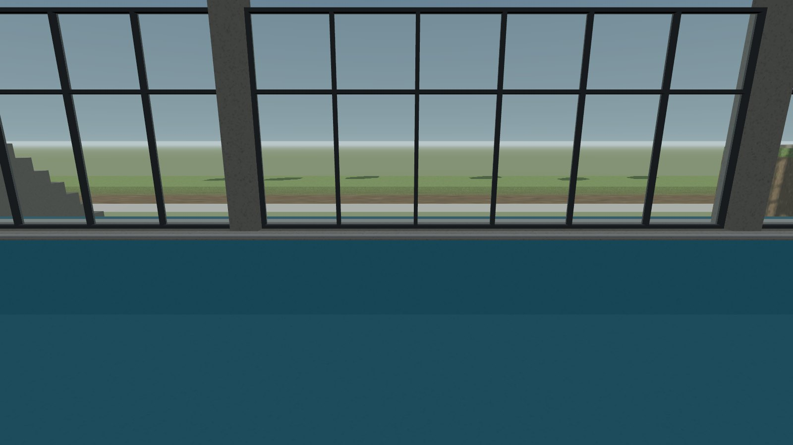
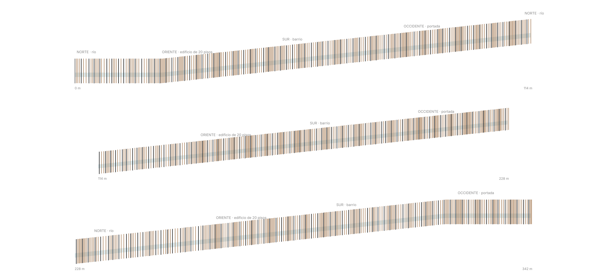
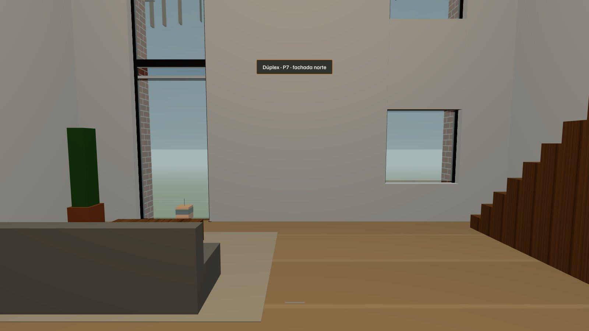
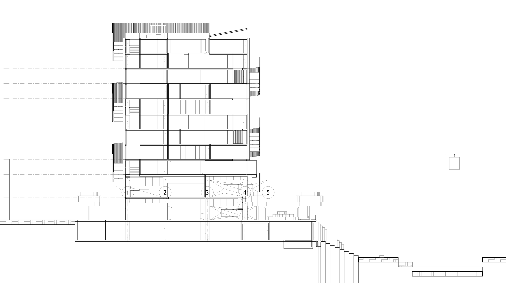

Una torre que recoge el agua de lluvia y la deja bajar a la vista, matera por matera, hasta el río. Mientras el agua baja, la vida sube: el cuidado abajo, el barrio en el medio y las huertas arriba.

El río Fucha atraviesa buena parte de Bogotá y la ciudad está empezando a mirarlo de nuevo. Por su ronda suben una ciclorruta, un camino peatonal y un metrocable que vienen desde el occidente. Remolino se pega a ese proyecto: la fachada occidental es la portada para quien sube por el río, y la esquina noroccidental es de los puntos más bajos de la cubierta, un gesto de reverencia hacia el agua.
Al oriente hay un edificio de veinte pisos con muchas ventanas. Al sur sigue el barrio. Cada fachada responde a lo que tiene enfrente, y eso es lo que le da carácter propio a cada una.

Una vía colectiva de escaleras y materas envuelve la torre como una espiral. La lluvia que cae en la cubierta y en las huertas baja de matera en matera: cada una riega la de abajo y la desborda por un tubo de 2 pulgadas, con un metro de traslapo para que el desagüe siempre quede alineado. Se oye caer desde adentro.
P1 y P2. Cuidado de día de niños y mayores, patio intergeneracional, cocina comunitaria y comedor de barrio.
P3 a P7. Residencia de mayores en un nivel, vivienda de los trabajadores del edificio y los primeros dúplex.
P8 a la cubierta. Dúplex más privados, asaderos y mirador, y huertas donde los vecinos cambian lo que cosechan.

La piscina queda en el sótano, a 5,7 m sobre el río, y se abre a él con un muro de vidrio. Delante del vidrio solo hay un borde de agua y una cascada de roca que baja en ocho escalones hasta la alameda: todo queda por debajo de la línea entre los ojos del nadador y el río. El gimnasio la mira a través de otro vidrio.
Si el río crece, lo primero que se inunda es el parque: la alameda y la cascada están pensadas para recibir el agua. Al pie del vidrio hay una barrera antiinundación que sube sola, flotando, y todas las salidas al río llevan una válvula antirretorno.

Una cinta de 6 m de alto envuelve la torre siguiendo la espiral: arranca recta y a nivel sobre la fachada norte, sube 3,24 m por fachada con esquinas curvas de 2 m de radio y remata, otra vez a nivel, sobre dos módulos de la occidental. No lleva vidrio a la vista, para que los pájaros no se estrellen: son listones verticales de madera inmunizada y, cada 1,50 m, una pletina hueca de acero que sostiene la cinta desde el voladizo de la matera. Detrás de la madera, a la sombra, una baranda de vidrio laminado de 1,10 m hace la protección.
El ritmo no es constante. Se abre frente a las franjas de ventanas y se cierra frente al ladrillo, y el rango cambia con la orientación. Las pletinas llevan boquillas que botan niebla hacia la cámara entre la cinta y la fachada, con el agua lluvia ya filtrada: la nube es la prueba visible de que el agua está limpia.
| Fachada | Luz entre listones | Por qué |
|---|---|---|
| Norte | 0,30 – 0,60 m · listón de frente | Es la vista al río: la más abierta. |
| Sur | 0,22 – 0,45 m · giro de 15° | El barrio y el sol del día. |
| Occidente | 0,15 – 0,35 m · giro de 30° | La portada y el sol fuerte de la tarde. |
| Oriente | 0,12 – 0,30 m · giro de 45° | Privacidad frente al edificio de veinte pisos. |
Detrás de la cinta, la fachada ortogonal sigue una regla de composición: columna de concreto a la vista, franja de ventana de 1,50 m hundida 0,50 m con fondo de graniplast café, paño de ladrillo y otra franja. Las franjas se alinean de piso a piso y doblan las esquinas.

Donde la espiral dobla, cada piso deja libre un módulo de esquina de 8 × 8 m. Son los hitos del edificio: terrazas comunes cubiertas por un cielo tejido de madera, y el uso de cada una sale de su orientación, su altura y de quién vive cerca.
| Esquina | Uso |
|---|---|
| P3 · SE | Jardín sensorial de mayores, con huerta en mesas a 0,80 y sol de la mañana. |
| P4 · SO | Lavandería y tendedero comunal: el calor del occidente seca la ropa. |
| P5 · NO | Jardín de niebla. Es la imagen del proyecto desde el río y el metrocable. |
| P6 · NE | Ludoteca para las familias de los dúplex, cerrada hacia el edificio vecino. |
| P7 · SE | Vivero y banco de semillas para las huertas. |
| P8 · SO | Invernadero comunal. |
| P9 · NO | Asaderos y mirador, abiertos al cielo: el humo sale y el río se ve entero. |
| P10 · NE | Estudio al aire libre para quienes viven arriba. |
| P11 · SE | Terraza de los dúplex de arriba, abierta al cielo. |
El recorrido web usa la geometría del modelo de Revit. Para que sea liviano, las viviendas no están amobladas una por una: cuando el visitante cruza la puerta de una, se carga un interior tipo y se ubica en esa vivienda. Las ventanas quedan en las franjas reales de su fachada, así que lo que se ve afuera (el río, el barrio, la cinta o el edificio vecino) depende del piso y de la orientación de la vivienda que se visita.
El dúplex tiene la sala a doble altura con la ventana de piso a techo. La cocina y el comedor quedan bajo el mezanine, y arriba están la habitación y el estudio.
Recorrer la torre →
La volumetría y las plantas se estudiaron en Rhino. La geometría base se trajo a Revit con Dynamo y desde ahí el edificio se modeló y se documentó en Revit: niveles en módulo de 3,24 m, muros y placas por tipo, familias de matera, materiales, topografía con toposólidos y el corte del agua. El mismo modelo alimenta el recorrido web.
Modelo y documentación: placas, muros, ventanas, familias de matera, materiales y cortes.
Geometría base: la espiral, la cinta y sus listones, y la regla de franjas de la fachada.
Recorrido: la geometría exportada del modelo, recorrida en el navegador con three.js.
